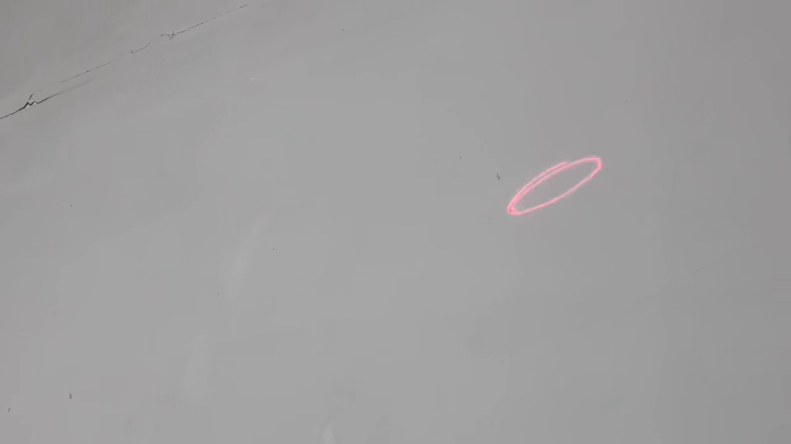

S/14
膜振光绘
声的十四行诗与听见一束光
Sonnets of Sound · Seeing a Beam · Acoustic Membrane Laser Mapping
INTERACTIVE PHYSICS LAB · ONLINE
LIGHT FIELD / LIVE FIT
振膜斜率的光学放大
246Hz
驱动频率改变膜响应，振膜斜率改变镜面法线，反射光把微小倾斜放大到远端光屏。
SIMULATION RUNNING
MIRROR SLOPE / 二维相图
DRIVE SIGNAL / 时域
SPECTRAL RESPONSE / 频谱
FUNDAMENTAL / f₀246Hz
LOOP CLOSURE / 闭环度92%
NORMALIZED / 光斑幅度0.72a.u.
OPTICAL GAIN / 光杠杆5.0m
FIT QUALITY / R²—

从“点”到“环”的可见条件
当光斑运动周期短于人眼与相机曝光时间，快速往返被积分成连续轨迹；当两个方向的膜斜率接近等频、但振幅或相位不同，轨迹就会由线段扩展为倾斜环。原视频里大量出现的环，不是“拟合失败”，而是二维响应接近 1:1 的直接线索。
声源探索：手机扬声器用 Tone generator 发声时，光斑常只有轻微变化。软件设定频率不等于膜前实际声压；手机低频输出和最大声压有限、频响不平，系统还可能限幅和保护，单音未命中膜模式时响应很小。改用人声后，宽频带和快速起伏更容易激起多个模式。当前未测膜前声压，不能只归因于功率。
拟合器在做什么
网页提取输入声音的基频、响度与频谱重心，再将它们映射为双轴振动参数，计算光斑轨迹并比较仿真波形与输入波形。参数面板可手动调节，以便观察频率、幅度、相位、阻尼与屏距分别如何改变图案。
δs(t) ≈ 2L · θ(t), θ(t) ≈ ∇w(rm, t)
真实实验轨迹图库
照片来自本轮原始实验记录。点击任一照片，会切换到相近的等效模型预设；预设只复现形态关系，不代表这些真实薄膜参数已被唯一反演。
01 采集声音以实际人声为主要激励，用 Phyphox 或 Audacity 记录主频、RMS 与频谱，并导出原始数据。
02 记录图案固定曝光与屏距拍摄光斑，Tracker 逐帧读取光斑中心坐标。
03 等效拟合用本网页联合调整 f、A、η、f_y/f_x、φ、ζ 和 L，比较轨迹与频谱。
04 检验误差用重复实验、标尺、同步触发和参数扫描区分离散波动、过曝与模型偏差。